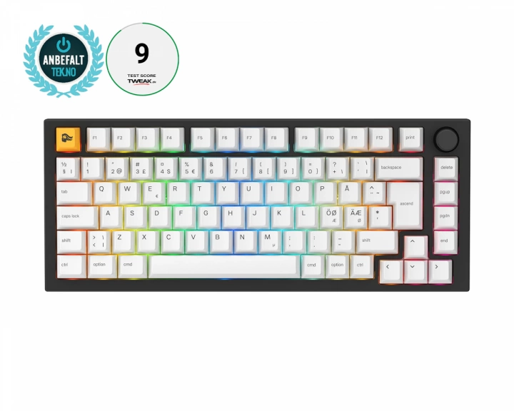

1990 kr
Letar du efter en förstklassig skrivupplevelse utan krångel? Titta inte längre än GMMK Pro 75% Pre-Built Edition! Det här tangentbordet levereras med allt du behöver för att komma igång, inklusive Glorious Fox linjära switchar och förstklassiga GPBT keycaps som är förinstallerade. Dessutom ingår glorius premium coiled kabel, switch puller och keycap puller och handledsstöd i PRO-storlek. Det är bara att koppla in den och börja njuta av en ny skrivupplevelse!
Gamingtangentbord från Duckious
Letar du efter en förstklassig skrivupplevelse utan krångel? Titta inte längre än GMMK Pro 75% Pre-Built
Edition! Det här tangentbordet levereras med allt du behöver för att komma igång, inklusive Glorious Fox
linjära switchar och förstklassiga GPBT keycaps som är förinstallerade. Dessutom ingår Glorious premium
coiled kabel, switch puller, keycap puller och handledsstöd i PRO-storlek. Det är bara att koppla in den och
börja njuta av en ny skrivupplevelse!
PRO:s helt modulära "hot swap"-design innebär att du enkelt kan byta ut dina mekaniska favoritbrytare på några minuter. Det packningsmonterade kretskortet är konstruerat för att ge en högpresterande skrivupplevelse med överlägsen akustik. Och det eleganta, CNC-bearbetade aluminiumhöljet håller det hela samman i ett fint paket.
Ingår i paketet:
Vårt artikelnummer: 21402
Tillv. artikelnummer: GLO-GMMK-P75-FOX-ISO-B-N
Glorious, född från ett community av passionerade spelare som krävde det bästa – startad av PC gamers, för PC gamers. Glorious Gaming tillhandahåller hårdvara och tillbehör konstruerade för prestanda på elitnivå, premiumkvalitet och prisvärdhet för alla och har utmanat den traditionella PC-gamingindustrin sedan starten 2014.
Glorious produkter byggdes för att tillgodose behoven även hos de seriösa spelare som ville ha mer än någon annan hade att erbjuda. Sedan de var en av de första att erbjuda en ultralätt gamingmus med RGB-belysning så har de bara fortsatt att ta gamingindustrin med storm.
| Anslutning | USB |
|---|---|
| Trådlös | Nej |
| Kompatibilitet | MAC, PC |
| Mekaniska brytare | Ja |
| Typ av brytare | Fox Linear |
| Formfaktor | 75%, TKL |
| Knapplayout | ISO 84 |
| Språklayout | ISO Nordisk (ÅÄÖ) |
| Belysning | Ja |
| Färg på belysning | RGB (16.8 m) |
| Knappmaterial | PBT |
| Handledsstöd | Ja |
| N-key rollover | Ja |
| Anti-ghosting | Ja |
| Hotswap | Ja |
| Färg | Svart |
| Garanti | 2 års garanti |
| Kabellängd | 1.8 m |
| Bredd | 332 mm |
| Djup | 135 mm |
| Höjd | 43 mm |